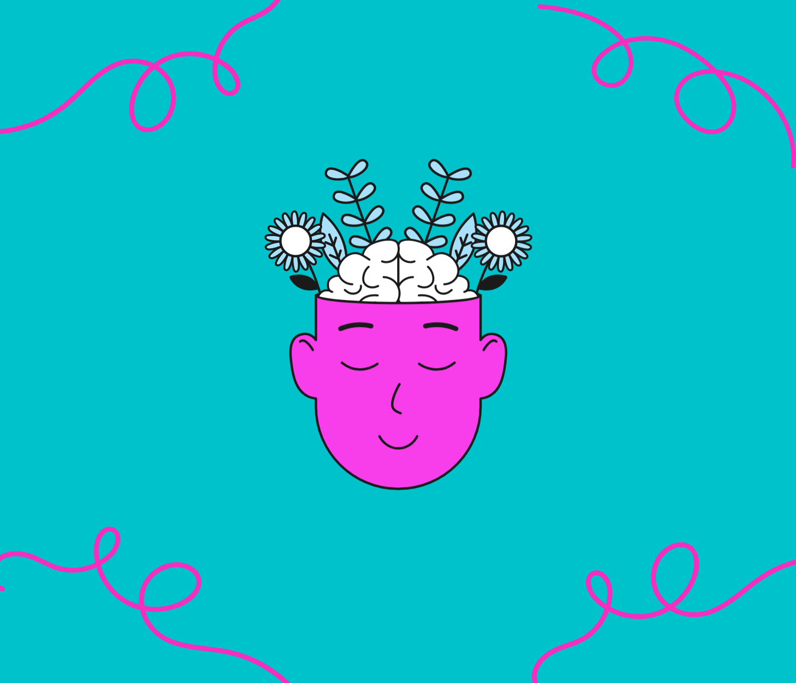

NUESTRO SERVICIO
INICIO
Nos preocupamos por la salud mental de los estudiantes
Enfocándonos principalmente en el control de:
1 Depresión
La depresión, o trastorno depresivo mayor (MDD) según Othmani & Oussama (2022), es una de las enfermedades mentales más comunes, se asocia con una pérdida de interés en practicar actividades cotidianas, pensamientos negativos y tristeza de larga duración que pueden causar problemas de salud, dificultades sociales y en algunos casos severos pueden llevar al suicidio.
2 Ansiedad
La ansiedad, es definida como un estado de ánimo orientado hacia el futuro asociado con la preparación para posibles eventos negativos próximos (Barlow, 2002).
3 Estrés
Según Gálvez et al., (2015) este trastorno es un fenómeno inherente al ser humano; dada la exposición a los diferentes elementos que le rodean, el cuerpo obtiene una respuesta natural y automática ante situaciones que nos resultan amenazadoras o desafiantes.